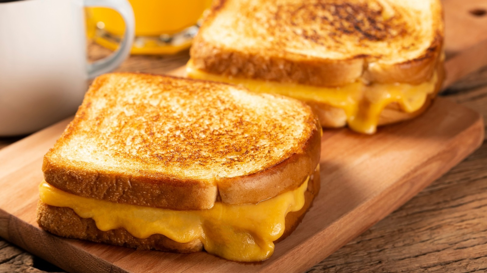

My Recipe: Grilled Cheese
Introduction
I chose grilled cheese because it is simple to make, and has a great taste and texture.
The origins of grilled cheese date back to the 1920's, and is a staple of Western culture.
Many people eat grilled cheese today and primarily eat it for lunch.

Ingredients
- 2 slices of bread
- 1½ tbsp of butter
- 2 slices of cheddar cheese
Instructions
- Spread your butter on both your slices of bread.
- Flip both slices over and put cheese on each slice.
- Set your oven to 350°F and bake for 3 minutes or if you have a toaster oven, set the heat to 3 and the time to 2.
- Combine both slices and serve.